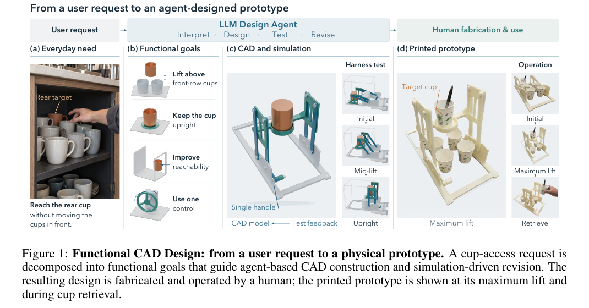
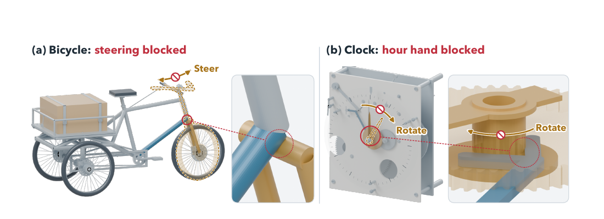
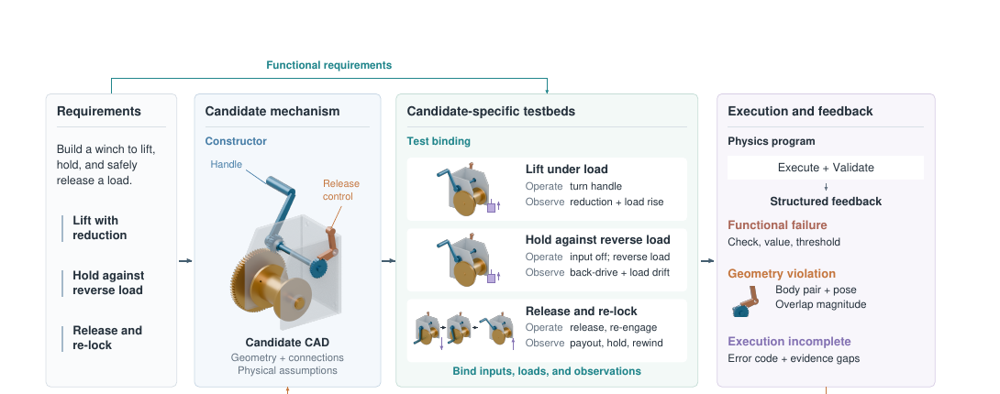
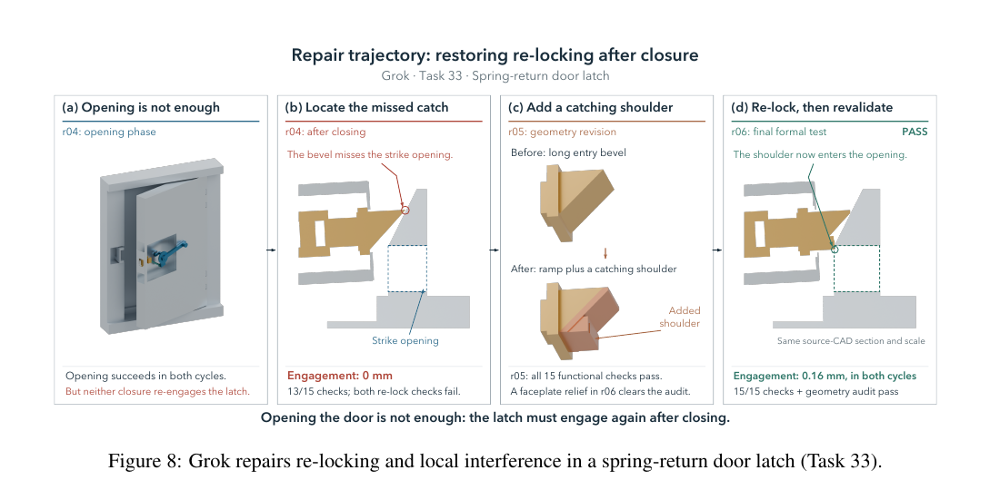
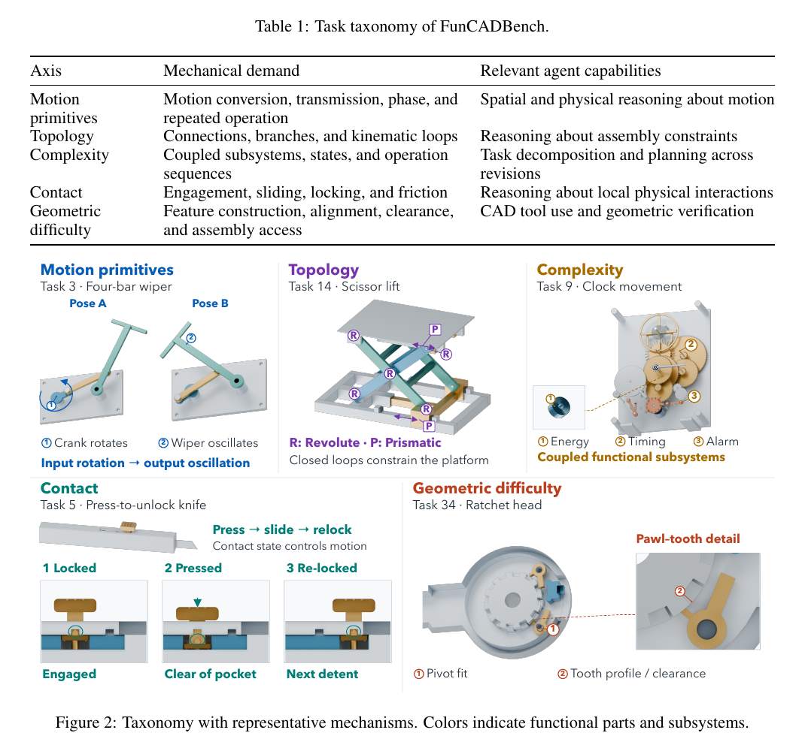
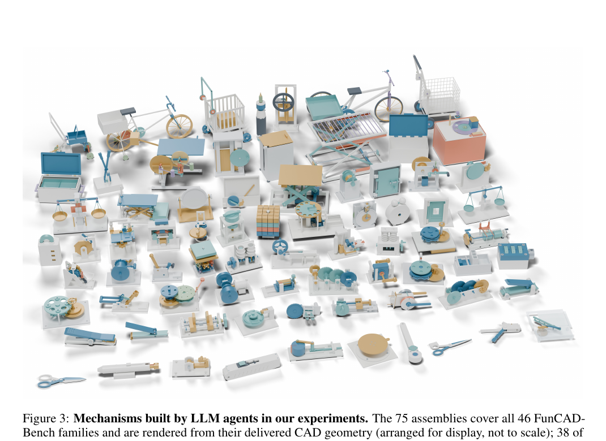
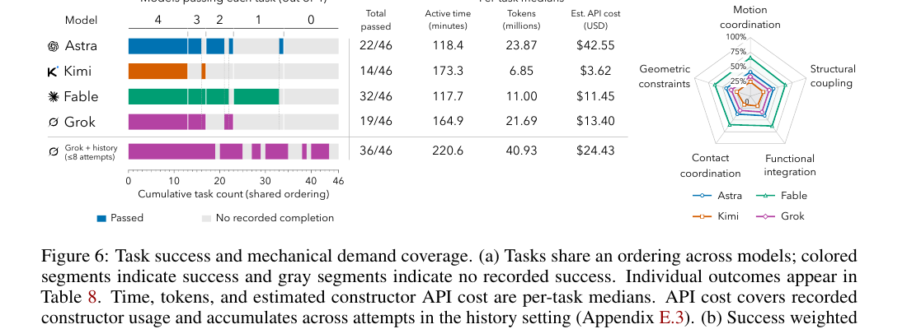

Paper Figure 1 / functional CAD design01

The problem
A CAD model can look right and still fail.
The failure cases
Good 3D performance does not guarantee a working machine.

BM07-B · AstraSteering blocked
Drag to orbit · scroll to zoom
BM09-C · AstraHour hand blocked
Drag to orbit · scroll to zoom
Open comparison demo ↗
Inspect full assemblies and replay controls.
02 / Agentic Harness
Geometry is only the start.

Same function, candidate-specific test.
03 / Revision example

A first motion is not enough.
Project video
Watch the mechanisms run.
04 / FunCADBench
46 mechanism families.


05 / Experiments
Simulation-guided revision improves completion.

Constructor agentsfull harness
| Constructor / model | Passed | Median active time | Median tokens | Est. constructor cost |
|---|
Final evaluation: gpt-6-astra · Codex · Medium for every setting. Grok + history uses up to eight attempts. * Kimi CLI records the requested High setting; its integration exposes no separate reasoning control.
Harness comparisonsAstra / Grok
46FunCADBench families
22/46Astra · full harness
32/46Fable · one attempt
36/46Grok · retained history
06 / Resources